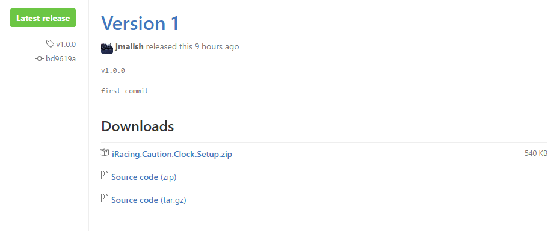

# Introduction
The main goal of this page is to explain what the settings do in the program, as well as outline how to use the program. As this program is still a work in progress, some things might change from what is shown on this page. I will try to keep it updated if I make any huge changes, but for the most part, I don't see any major changes to how the layout currently is.
# Downloading and Installing the Program
The best way to download the program is to go to the latest releases page and download the .zip file from the top most version.
The version number will likely be different, but this images shows which link to download:

After unzipping the downloaded file, run the .msi file and follow the instructions to install it like any other program.
Windows will likely complain that my program, you can either run the installer as admin, or tell your antivirus to ignore the warnings.
The program is uninstalled like any other program on windows, go to your Add or Remove screen on windows and click uninstall.
# The Quick Info Tab

The quick info tab is the main page you see when you launch the program. Working from top to bottom on the image above (note that some of these will not change until the race has started, so some of them will remain blank during practice and qualifying):
- Connecting to iRacing: This says whether or not the program has connected to the iRacing sim. It will change to "Connected to iRacing!" when connected.
- Admin: Whether or not you are an admin in the session. This is important information because you must be an admin for the program to throw cautions.
- Current Flag: What flag the session is showing as currently out.
- Lap - of -: During the race, this shows what lap the leaders are on.
- Clock expires in: Shows how long until the caution clock expires and a yellow is thrown.
- Caution Clock: Shows whether the caution clock is active or not.
- Manual Caution / Test Button: Pushing this button will let you test your Caution Hotkey button. It also doubles as a way to manually throw a caution quickly if needed.
- Control Cautions: When this checkbox is checked, you are the controlling cautions for the sessions. It's ok if more than one person has this set.
# Large Countdown Timer
This tab is pretty self explanatory, it's just a larger timer which is easier to see when racing.
The "Streamer Friendly" checkbox will turn the background green in order to be used as a green screen so only the numbers show up on screen.
The "Change Number Color" button allows you to change the color of the numbers themselves.
# Options Tab

The options tab is where you make changes to the caution clock.
From top to bottom:
- Time between cautions...: This setting probably won't ever be used unless you're doing fun races or want to try something different. It changes the time that the caution clock counts down from. The default (which is what the real series runs) is 20 minutes.
- Caution Clock Lap Cut off: This setting determines what lap the caution clock is turned off permanently. At pretty much every track, the cutoff is twenty to go. However at Canadian Tire and Pocono, the caution clock turns off at 10 laps to go. If the program determines that you are at one of these two tracks, it will notify you of the rule difference and automatically change the setting for you.
- Caution Hotkey: This setting needs to correspond with whatever auto text chat you have selected in iRacing options. See the image below for more explanation.
You must have the dollar sign ($) at the end of the !yellow$ command, it tells iRacing that you want to send the command to throw the caution immediately.
# Closing
I think that's everything. If you have any questions, feel free to send me an email.